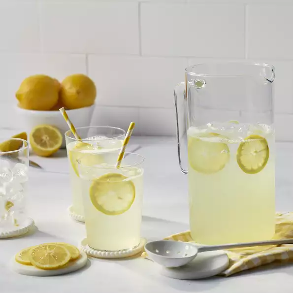

Old-Fashioned Lemonade

Description
This classic lemonade recipe is the one my mom used to make for me when I was little. Ah, the
taste of summer! It's the perfect combination of sweet and tart. When using a clear pitcher,
adding a few of the juiced lemon halves makes it look prettier.
Ingredients
- 6 lemons
- 1 cup white sugar
- 6 cups water, or more as added
Recipe
- Juice lemons; you should have 1 cup juice.
- Combine juice, sugar, and water in a 1/2-gallon pitcher. Stir until sugar dissolves.
Taste and add more water if desired.
- Chill and serve over ice.
Return to main page